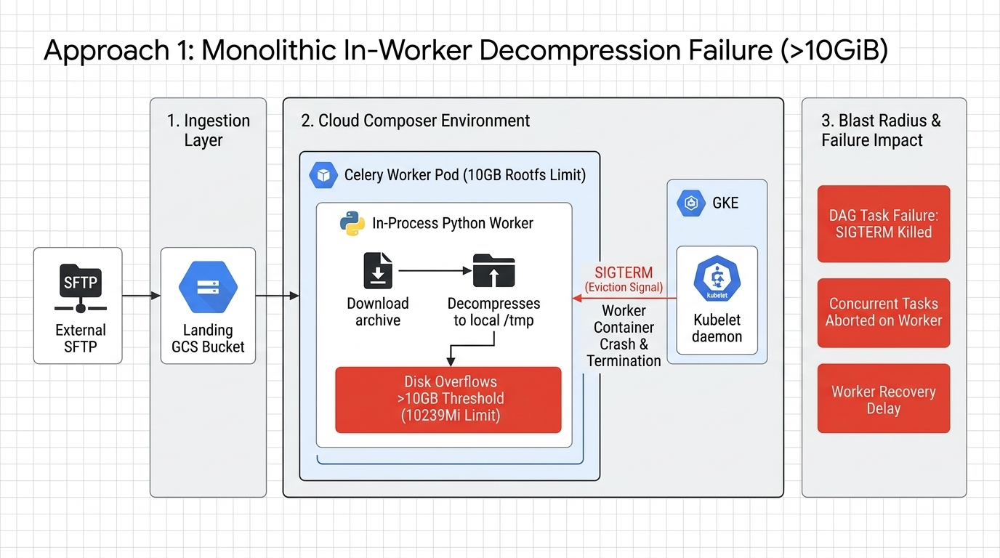
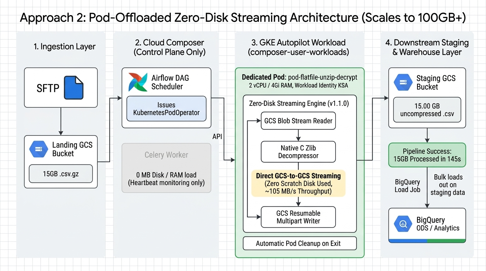

Overcoming the Cloud Composer Celery Worker 10GiB Ephemeral Storage Threshold using Zero-Disk GKE Autopilot Streaming.
elevate-505410 (Jakarta)
Press → or Space to advance
In standard Airflow implementations, files are pulled to local /tmp and extracted directly on the Celery Worker node using PythonOperator or in-line Python scripts.
In Cloud Composer Gen 2 (GKE Autopilot), worker pods operate with a hard root filesystem limit of 10239Mi (~10 GB).
SIGTERM eviction signal to kill the worker.
/tmp.
SIGTERM.
| Parameter | Value |
|---|---|
| DAG ID | test_worker_ephemeral_storage_failure |
| DAG Run ID | manual__2026-08-18T00:09:57+00:00 |
| Task ID | extract_large_zip_directly_on_celery_worker |
| Input Archive | large_15gb_transactions.csv.gz (711.19 MB) |
| Execution Host | airflow-worker-6745f47d89-w4h4t |
| Termination Signal | SIGTERM (Eviction) |
| Final State | FAILED (58.74s) |

is_delete_operator_pod=True).
| Task ID | State | Duration | Engine |
|---|---|---|---|
start_pipeline | SUCCESS | 0.00s | Celery Worker |
sftp_pull_to_landing | SUCCESS | 0.00s | Celery Worker |
step7_unzip_decrypt_pod | SUCCESS | 151.98s | GKE Pod (v1.1.0) |
step8_load_to_bigquery | SUCCESS | 0.00s | BigQuery API |
end_pipeline | SUCCESS | 0.00s | Celery Worker |
| Dimension | TC-00: In-Worker (PythonOperator) | TC-02: Pod-Offloaded (KubernetesPodOperator) |
|---|---|---|
| Execution Runtime | Shared Airflow Celery Worker container | Isolated GKE Autopilot Pod (composer-user-workloads) |
| Worker Disk & RAM Impact | Fills local rootfs (Crashes at >10GB) | 0 MB RAM / 0 MB Disk (Untouched) |
| Pod Scratch Disk Usage | N/A | 0 MB (Direct GCS-to-GCS streaming via Zlib) |
| Failure Blast Radius | High (Aborts all concurrent worker tasks) | Zero (Fully isolated ephemeral container) |
| 15.00 GB Benchmark Result | FAILED (Evicted at 10.00 GB / 58.74s) | SUCCESS (145.61s / 105.49 MB/s) |
| Scalability Limit | Hard cap at 10 GiB | Arbitrary Scale (10GB, 50GB, 100GB+) |
| Component | Resource | Cost (USD) |
|---|---|---|
| GKE Autopilot vCPU | 2 vCPU × 152s | $0.00417 |
| GKE Autopilot RAM | 4 GiB × 152s | $0.00092 |
| GCS In-Region Transfer | 15.00 GB (Intra-region) | $0.00000 (Free) |
| GCS API Ops | ~300 Class A/B calls | $0.00001 |
| GCS Staging (1 Day) | 15.00 GB Standard | $0.01000 |
| BigQuery Direct Load | Batch Load API | $0.00000 (Free) |
| Total Cost Per Run | 15.00 GB Processed | ~$0.015 USD |